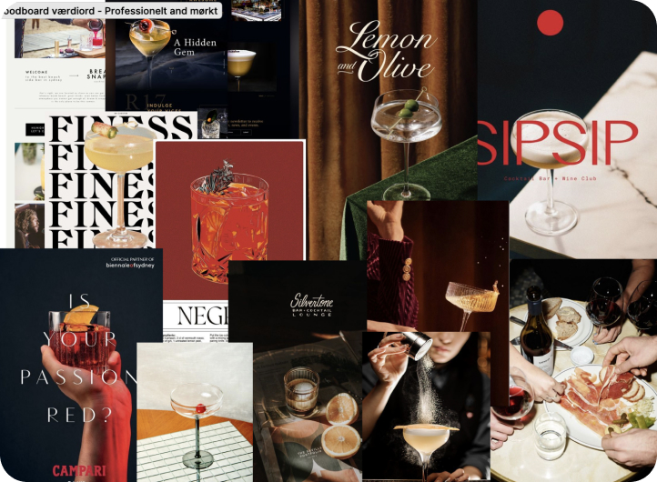
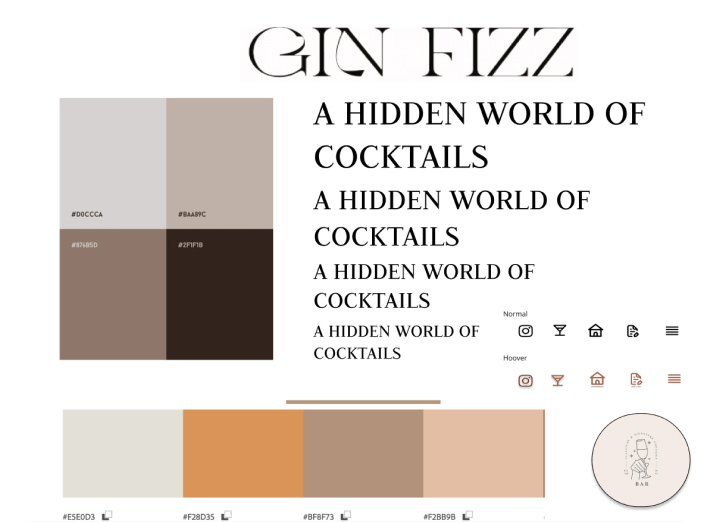

Grundlæggende UX/UI
Tema 3 emnesite
I dette tema fokuserede vi meget på UX (User Experience) og UI (User Interface).
Vi lærte at sætte os i brugerens sko for bedre at forstå, hvad vi ved om dem og deres forventninger. Gennem Figma arbejdede vi med værktøjer som moodboards, styletiles, prototyper og wireframes for at skabe og visualisere vores designideer. Vi gennemgik også forskellige testmetoder, herunder BERT test, trunk testing og Lighthouse test. Disse tests er nødvendige for at sikre, at et website fungerer effektivt, er brugervenligt og opfylder brugerens behov. Ved at teste et site kan vi identificere problemer, forbedre brugeroplevelsen og sikre, at designet er intuitivt og nemt at navigere.
Hjemmeside Designprocessen
Tema 3 var enormt inspirerende for mig, da det gav mig mulighed for at udfolde min kreativitet i design. Jeg fandt det spændende at arbejde med at skabe et emnesite, men jeg stødte også på udfordringer, især med at bruge Figma. Jeg havde ikke en dyb forståelse af komponenter og hvordan Figma kunne lette kodningsprocessen, hvilket gjorde arbejdet mere besværligt. Det er dog noget jeg har lært af nu, og har indset hvor meget mere tid man får sparet ved egentlig bare at forstå.
Jeg blev fascineret af, hvor meget tegne- og designarbejde der kræves for at skabe en god hjemmeside og præcist ramme emnet. Tests og spørgeskemaer hjalp mig med at identificere fejl og forstå, at mit arbejde endnu ikke var perfekt. Research-delen viste sig at være afgørende for at komme i dybden og forbedre mit design..
Forarbejdet
Til en anden gang vil jeg fokusere på at forbedre min designproces og fordybe mig mere i Figma. Jeg har lært, at et produkt hurtigt kan blive rodet og ustruktureret, hvilket gør hele processen mere uoverskuelig og ineffektiv. Derfor vil jeg arbejde på at planlægge og organisere mine projekter bedre fra starten.
Ved at mestre værktøjer som Figma og anvende en mere struktureret tilgang, kan jeg skabe mere sammenhængende og gennemtænkte designs. Disse erfaringer har været uvurderlige, og jeg vil tage dem med mig i fremtidige projekter for at sikre en mere smidig og effektiv arbejdsproces
Præsentation og feedback
{skriv her......}
Dokumenation og test
{skriv her......}